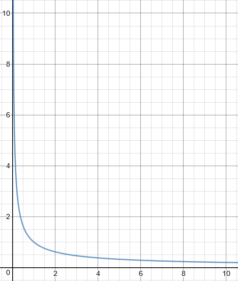
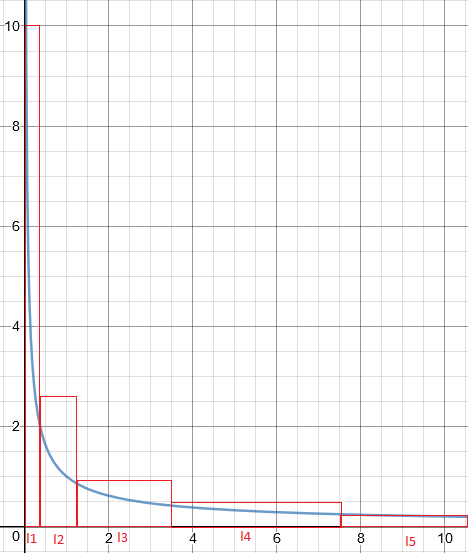

Rank based Prioritized Experience Replay. Effective sampling intervals calculation method
The following article assumes reader is familiar with Prioritized Experience Replay paper Prioritized Experience Replay paper.
In short, it is a way to sample important transitions from replay buffer more frequently. Authors define probability of sampling a particular transition as:
$$P(i) = \frac{P_i^ \alpha }{ \sum_1^N P_k^ \alpha }$$
Where ɑ ∈ [0;1] and Pᵢ defined in two ways:
- Pᵢ = |TD error| + 𝜀
-
Pᵢ = 1 / rank(i), where rank(i) is index of transition in array sorted by it’s |TD error|
In this case P becomes a power-law distribution with exponent ɑ
Let's look at power-law distribution with ɑ=0.5

In this article we will focus on rank based sampling approach.
Let's also introduce some variables that will be used:
- N - replay buffer length. For example, we will use N=1,000,000
- K - mini-batch size. For example, we'll use K=128
- ɑ - The exponent ɑ determines how much prioritization is used, with ɑ = 0 corresponding to the uniform case. We'll use ɑ=0.5
Prioritized Experience Replay paper authors give us an implementation hint:
For the rank-based variant, we can approximate the cumulative density function with a piecewise linear function with k segments of equal probability. The segment boundaries can be precomputed(they change only when N or ɑ change). At runtime, we sample a segment, and then sample uniformly among the transitions within it. This works particularly well in conjunction with a minibatch-based learning algorithm: choose k to be the size of the minibatch, and sample exactly one transition from each segment – this is a form of stratified sampling that has the added advantage of balancing out the minibatch (there will always be exactly one transition with high magnitude δ, one with medium magnitude, etc)
We will return to this quotation during article build-up a few times. First of all, let’s look at first sentence:
For the rank-based variant, we can approximate the cumulative density function with a piecewise linear function with k segments of equal probability
Let's try to visualize mentioned segments:

At runtime, we sample a segment, and then sample uniformly among the transitions within it
So, in order to sample the transitions we need to know the boundaries of a segment (l1, l2, l3.. lN) and for that – length (better to say area) of probability segment. To get area of probability segment (sampling interval) we can just take a probability total mass and divide it by K. Then having sampling interval length calculated, the boundaries for each segment could be found.
The naive approach expressed in python will look like this:
From computational point of view it is a disaster. We’re doing N iterations twice! If only there will be a way to compute sum of all P(k) faster, at lease first N iterations would be avoided.
And to our luck, there is a way. Let’s look at denominator of P(i) fraction:
$$\frac{1}{ rank(1)^\alpha } + \frac{1}{ rank(2)^\alpha } + \frac{1}{ rank(3)^\alpha } + \cdots + \frac{1}{ rank(N)^\alpha }$$
Considering a fact that rank(i)=n, where n ∈ [1;N] (to avoid division by zero replay buffer's first index is 1) and using commutative property of sum, this could be written in following form:
$$\frac{1}{ 1^\alpha } + \frac{1}{ 2^\alpha } + \frac{1}{ 3^\alpha } + \cdots + \frac{1}{ N^\alpha }$$
What we're looking at here is p-series (or hyperharmonic series) Wiki page (otherwise known as Riemann zeta function). Calculating a partial sum ( or n-th harmonic number) is exactly what we need to improve computational performance.
During my experiments I came across an article On analogue of Eiler-Maskeroni constant and regularities of its change(RU)
In short, this paper is about S-th harmonic number and corresponding analogue of Eiler-Maskeroni constant approximation. Authors proposed approximation method is following:
$$H_{ns} = \frac{n^{1-s}-1}{1-s} + \gamma _s + \alpha (n)$$
Where ɑ(n) - infinitely small number, which we will ignore, and 𝛄 - analogue of Eiler-Maskeroni constant for a particular S that is approximated with following polinome
$$Pm(s) = 1.01956 + 0.223632*s + 3.45985 * 10^{-2} *s^2 - 9.32331*10^{-4}*s^2 - 1.40047*10^{-5}*s^3 +7.63*10^{-6}*s^4$$ $$\gamma_s = \frac{2}{ \pi }arctg(Pm(s))$$
With this new knowledge, let's rewrite sampling intervals calculation code like this:
Nice! We just reduced number of iterations from 2N to N. But can we do better? Yes!
$$H_{ns} = L*K$$ $$L*K = \frac{n^{1-s}-1}{1-s} + \gamma _s$$
With a little bit of math rearangements, we get a reverse tool - equation that tells us length of an interval given it’s index (K) and length (L).
$$n= e^{\frac{1}{1-s}*ln[(L*K - \gamma_s)(1-s) + 1]}$$
With this tool in hand, second loop is only K iterations instead of N:
Of course, as this is approximated calculations, the intervals boundaries are not the same (thou very close!) as when calculated in a strict way (with 2 N loops). But due to stochastic nature of sampling, misses could be safely ignored.
Complete code examples:
- Replay buffer with rank based Prioritized Experience Replay and Importance Sampling: SARST_Rank_Priority_MemoryBuffer.py
- LunarLander-v2 TensorFlow2 training script: lunar_lander_double_dueling_DQN_IS_rank.py
Thank you!